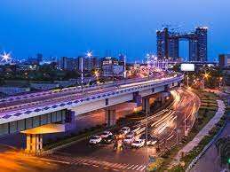
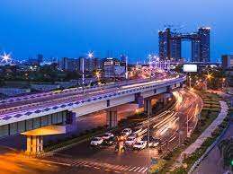

Kolkata is the capital and largest city of the Indian state of West Bengal. It is on the eastern bank of the Hooghly River 80 km (50 mi) west of the border with Bangladesh. It is the primary business, commercial, and financial hub of Eastern India and the main port of communication for North-East India.According to the 2011 Indian census, Kolkata is the seventh-most populous city in India, with a population of 45 lakh (4.5 million) residents within the city. Its Metropolitan Area (known as Greater Kolkata) has a population of over 1.41 crore (14.1 million) residents making it the third-most populous metropolitan area in India. In 2021, the Kolkata metropolitan area crossed 1.5 crore (15 million) registered voters. The Port of Kolkata is India's oldest operating port and its sole major riverine port. Kolkata is regarded as the cultural capital of India. Kolkata is the second largest Bengali-speaking city after Dhaka. It has the highest number of nobel laureates among all cities in India.
 
